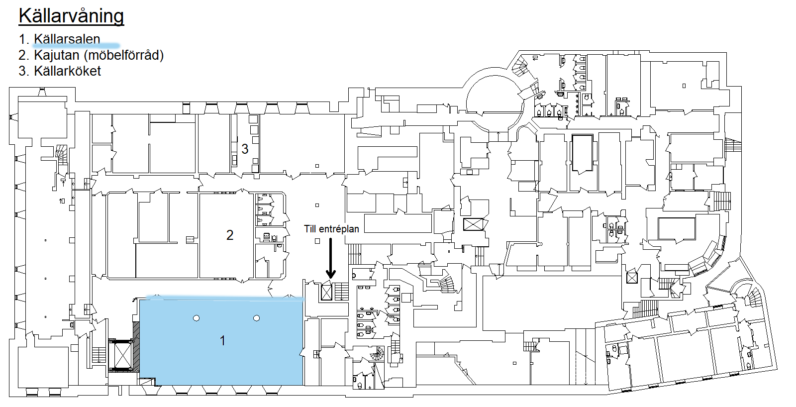
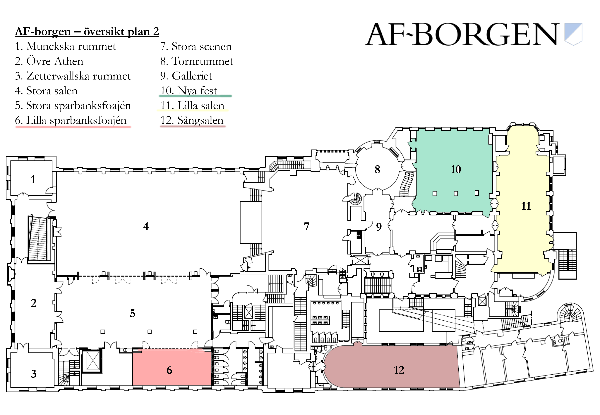
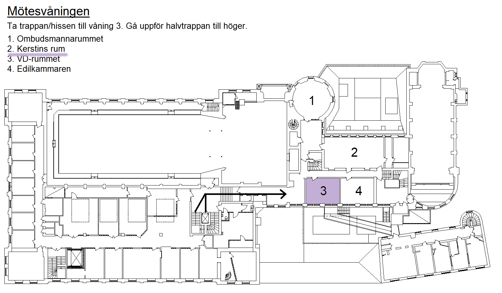
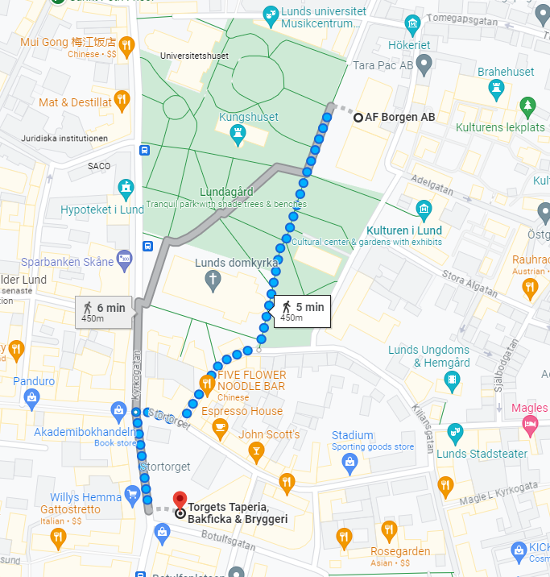

Make this Notebook Trusted to load map: File -> Trust Notebook
Venues
The main venue for the conference is AF Borgen.
The session venues are mainly on the second and third floor, as well as one room in the basement.
Map of Lund
The map below shows the location of AF Borgen in relation to the Economic History Department, where the administrative meetings will take place, and EC1 of Holger Crafoords Ekonomicentrum, where the panel debate will take place.
Maps of AF Borgen
Källarsalen is on the cellar floor, below the level of the main entrance.
Gustafscenen is on the level of the main entrance.
Lilla salen, Nya Fest, Sångsalen, and Lilla Sparbanksfoajén are on Floor 2, one level up from the level of the main entrance.
Kerstins Rum is one level up from there.
The Källarsalen floor
 ### Gustafscenen floor

Stora salen and main venues floor

Kerstins rum floor

Walk to Torgets
